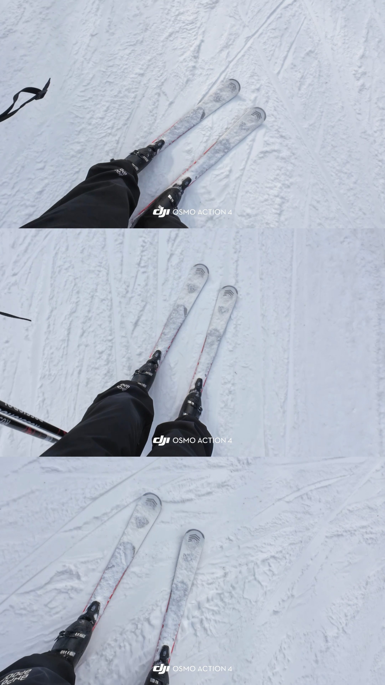
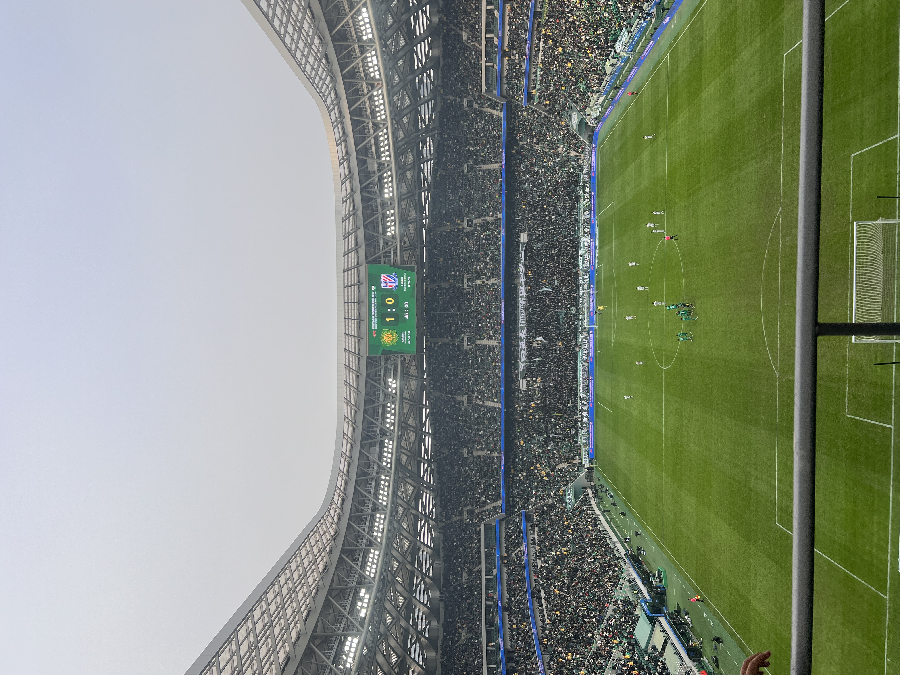

Software engineering student at BUAA
Hello, I'm
Jack Yu.
I study software engineering at Beihang. This is where I keep what I build, what I think about, and a few things from life outside the screen.
A little more about me ↗ CM · 中场 / Madridista
这里都放了些什么
一些笔记，也有一些生活。

足球
Hala Madrid.
场上踢中场，场下看皇马。聊聊足球 ↗